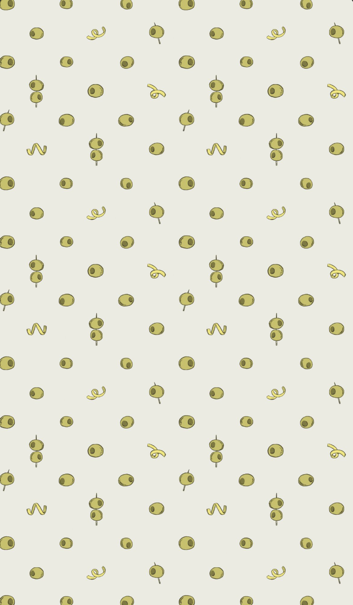

This project is dedicated to my life and all the crazy turns and twists it has taken. Along the way though,
I have learned to take a step back and enjoy the joruney without having to know how things are going to end up.
All paragraphs were generated with assistance of artificial intelligence.